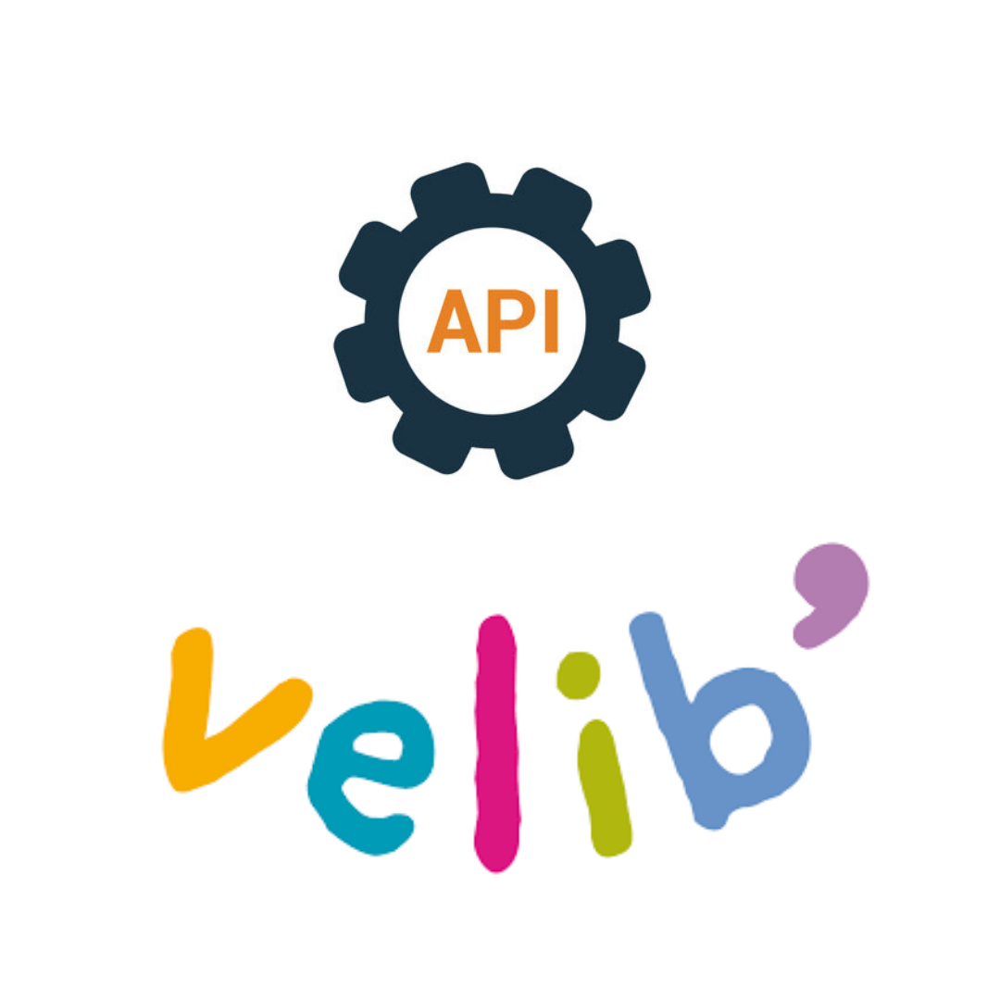

Outils Utilisés

Langages
PHP,Twig,HTML,CSS,JS,Java

FrameWork
Symfony

API
Velib',OpenStreetMap
L'objectif de Veliko est de fournir une application web permettant de suivre en temps réel la disponibilité des vélos à Paris et en Île-de-France.
Le projet facilite la mobilité urbaine avec des fonctionnalités telles que la géolocalisation, le suivi des stations et l'inscription des utilisateurs, tout en offrant une interface administrateur pour gérer les utilisateurs, les vélos et les statistiques d'usage.
PHP,Twig,HTML,CSS,JS,Java
Symfony
Velib',OpenStreetMap
Dans mon projet, j’ai rencontré une difficulté pour assurer la cohérence des données entre la base et l’interface web, notamment lorsqu’un administrateur bloquait un utilisateur depuis le dashboard. Le principal problème était que, même après avoir été bloqué en base de données, un utilisateur pouvait encore accéder a son compte s’il était déjà connecté.
Ainsi, dès qu’un utilisateur tentait d’effectuer une action, son statut était vérifié en temps réel pour l’empêcher d’accéder aux fonctionnalités si il été affectivement bloqué.
Lors de la mise en place de la gestion des réservations dans mon projet, j'ai rencontré plusieurs défis pour assurer une gestion cohérente des réservations et leur suivi en temps réel. Le principal problème était de garantir que les informations de réservation soient correctement synchronisées. Il fallait aussi vérifier la disponibilité des vélos sur la station et les mettres à jour
Ce projet Veliko m'a permis de renforcer mes compétences en développement web avec Symfony, en intégrant des fonctionnalités de cartographie et des API en temps réel.
J'ai également approfondi mes connaissances en sécurité, tout en consolidant ma capacité à gérer un projet complet, de la conception à la mise en production.